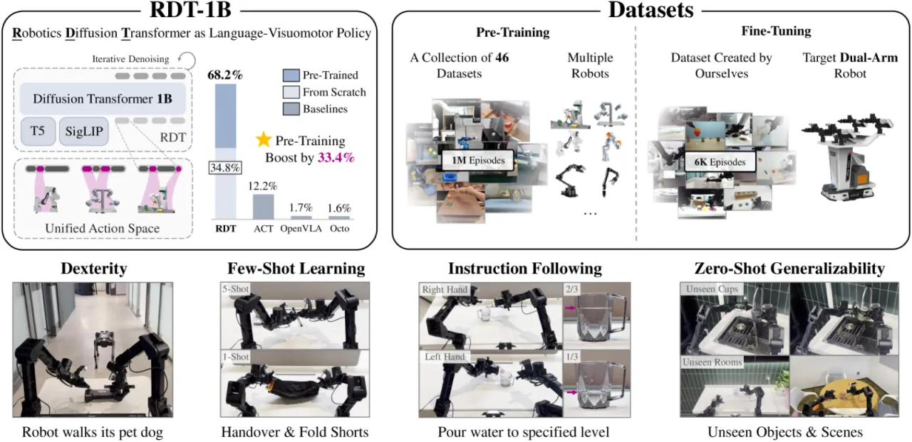
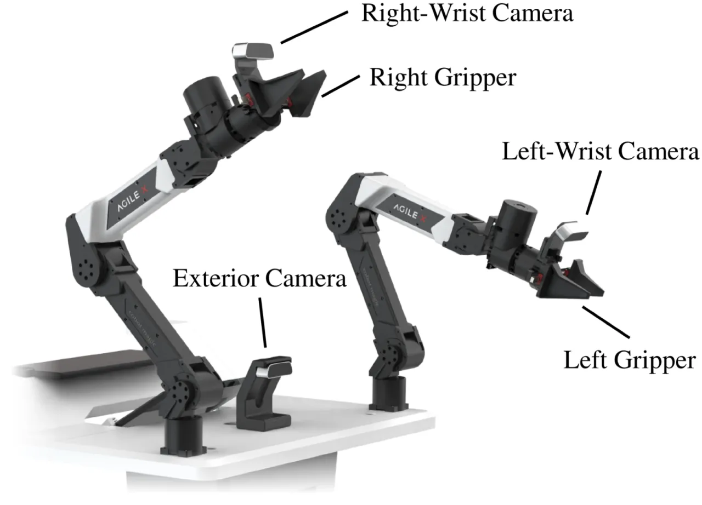
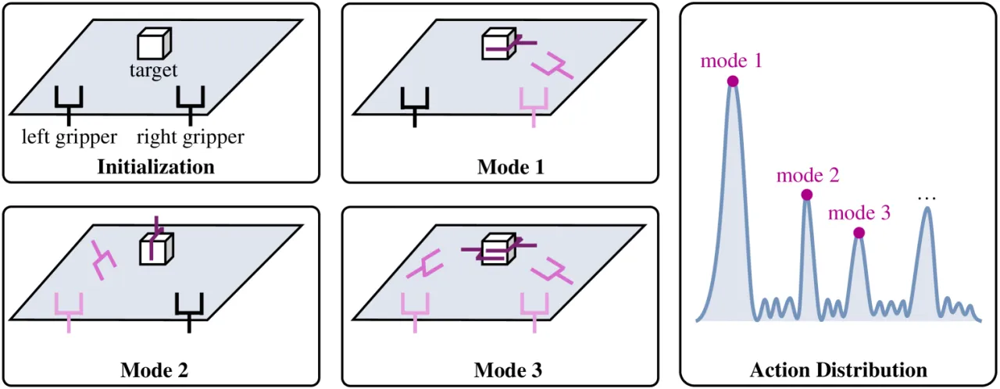
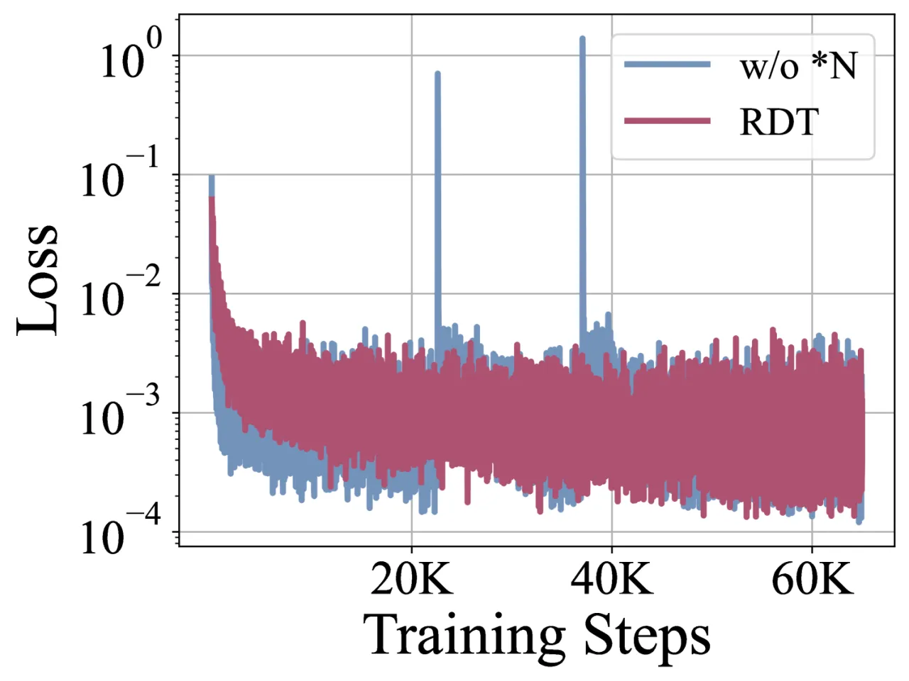
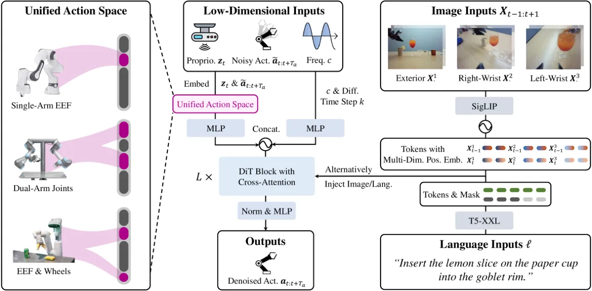

RDT-1B 是首个专为双臂机器人操作设计的大规模扩散 Transformer 基础模型，参数量达 12 亿。 通过引入"物理可解释统一动作空间"和多项架构创新，在包含超过 100 万条轨迹的多机器人数据集上预训练后， 仅需少量微调即可泛化到未见过的物体、场景、语言指令，以及 1-shot / 5-shot 新技能学习。
双臂操作是机器人走向真实世界的关键能力，但现有方法面临两大核心挑战： 一是双臂协调产生的多模态动作分布（同一任务可能存在多种合理的执行方式）， 二是双臂演示数据的严重匮乏，限制了模型的泛化能力。 作者指出，现有扩散模型在机器人操作上最多只达到 93M 参数规模，难以充分利用大规模多机器人数据。
"Bimanual manipulation is essential in robotics, yet developing foundation models is extremely challenging due to the inherent complexity of coordinating two robot arms (leading to multi-modal action distributions) and the scarcity of training data."


RDT 以扩散 Transformer 为骨干，通过三项关键架构改进适配机器人操作的特殊性； 同时设计"物理可解释统一动作空间"，将来自 46 个数据集、多种机器人的异构动作统一表示， 从而实现跨机器人知识迁移并缓解数据稀缺问题。

机器人物理量（如关节角度、速度）数值范围差异极大，标准 Transformer 在大规模预训练时会出现 数值不稳定甚至梯度爆炸。引入 Query/Key Normalization 和 RMSNorm 后，训练损失曲线稳定收敛。 论文指出："Large-scale pre-training tends to be very unstable or even explode without this modification."
将标准 Diffusion Transformer 的线性解码器替换为非线性 MLP，以更好地捕捉机器人动力学的非线性特征。 消融实验表明："without this design, RDT cannot effectively capture nonlinear dynamics."
在 Transformer 各层中交替注入图像 token 和文本 token，防止视觉信息淹没语言条件信号。 这一设计使 RDT 能够精确理解细粒度语言指令（如"倒三分之一的水"）， 而不仅仅是粗粒度的任务描述。
不同机器人的动作空间（关节角度、末端执行器位姿、夹爪开合等）在维度和物理单位上各不相同。 RDT 设计了一套统一表示，在保留物理含义的同时消除了跨平台异构性，从而能够在 46 个不同机器人数据集（超 1M 轨迹、21TB）上联合预训练，而不引入负迁移。
推理加速：使用 DPM-Solver++ 将扩散步数从 100 步缩减至 5 步， 实现 6 Hz chunk 频率 / 381 Hz 实际动作频率，满足实时控制需求。
在 ALOHA 双臂机器人上评测 7 类挑战任务，涵盖 5 个研究问题： 未见物体泛化、未见场景泛化、语言指令跟随、few-shot 新技能学习、精细灵巧操作。 基线方法包括 ACT、OpenVLA 和 Octo。 预训练使用 48 块 H100 80GB GPU 训练一个月（1M 步）；微调同样硬件运行 3 天（130K 步）。

| 任务 | ACT | OpenVLA | Octo | RDT (ours) |
|---|---|---|---|---|
| Wash Cup · 总体（未见物体） | 12.5 | 0 | 0 | 62.5 |
| Pour Water · 总体（未见场景） | 12.5 | 0 | 0 | 62.5 |
| Pour Water-L-1/3（语言指令） | — | 0 | 0 | 87.5 |
| Pour Water-R-2/3（语言指令） | — | 0 | 0 | 87.5 |
| Fold Shorts（1-shot） | 0 | 0 | 4 | 62.5 |
| Handover · 总体（5-shot） | 88 (pickup) | 84 (pickup) | 100 (pickup) | 100 (pickup) |
| Robot Dog（灵巧操作） | 32 | 0 | 0 | 48 |
| 变体 | 未见物体 | 未见场景 | 语言指令跟随 |
|---|---|---|---|
| RDT (regress) — 去掉扩散，改为回归 | 12.5 | 50 | 12.5 |
| RDT (small) — 小参数量模型 | 37.5 | 62.5 | 25 |
| RDT (scratch) — 无预训练，从头训练 | 0 | 25 | 62.5 |
| RDT (ours) | 50 | 62.5 | 100 |
消融结果表明："diffusion modeling, large model size, and large data size all contribute to superior performance"—— 三者缺一不可。去掉扩散建模后，语言指令跟随从 100% 骤降至 12.5%；去掉大规模预训练后， 未见物体任务成功率从 50% 降至 0%。

尽管 RDT 在海量多机器人数据上预训练，但在 ALOHA 上的评测仍依赖 6K+ 条目标平台演示数据进行微调。 零样本跨平台部署（不经任何微调）的可行性尚未验证，存在一定的 embodiment gap。
物理可解释统一动作空间虽然有效，但对于新机器人平台，仍需手动设计从其原生动作空间到统一空间的映射规则。 这一过程需要机器人专业知识，限制了"即插即用"的可扩展性。
论文指出双臂操作数据 "scarcity" 是核心挑战。尽管 RDT 通过大规模预训练缓解了数据稀缺问题， 但收集 6K+ 高质量双臂演示仍需大量人力成本。论文使用 GPT-4-Turbo 增强语言多样性， 但并未解决物理演示数据的采集瓶颈。
即使使用 DPM-Solver++ 将扩散步数减至 5 步并达到 6 Hz chunk 频率， 对于需要极高实时反应速度的任务（如动态抓取运动物体）仍可能存在延迟问题。 经典回归策略（如 ACT）在推理速度上仍具优势。